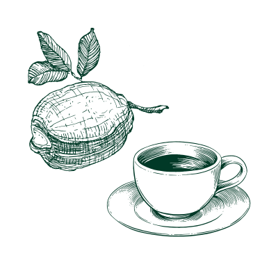
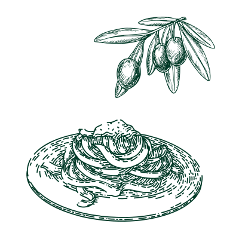
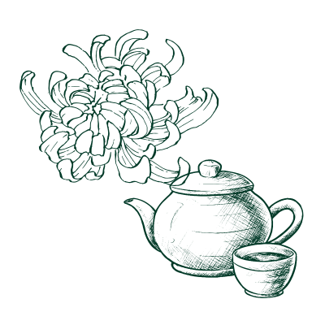

Cold
Explore around those cultural home remedies to see how is cold treated differently.
×
Cross-Cultural Remedies: Lemon Coffee
Lemon coffee is a homemade remedy in multiple cultures, including Italy, Middle East, North Africa, and Latin America. The caffeine can help resist blood vessel while the vitamin C in lemon helps a better circulation.
Ingredients:
- Haf a lemon
- A cup of hot, bitter coffee
Steps:
- Prepare a cup of hot and bitter coffee.
- Squeeze the lemon juice into the coffee.
- Stir and enjoy!

×
Italy: Olive Oil & Garlic Spaghetti
Olive oil is a traditional Italian remedy for curing migraines. It contains a compound that mimics the effect of ibuprofen, oleocanthal. In the past, Italian people would use a basin of water with a drop of olive oil to diffuse the scent and treat headaches. Now, they eat some food with olive oil, such as their classical dish, Garlic Spaghetti.
Ingredients:
- 1 pound uncooked spaghetti
- ½ cup olive oil
- 6 cloves garlic, thinly sliced
- ¼ teaspoon red pepper flakes
- salt and freshly group black pepper
- ¼ cup chopped Italian parsley
- 1 cup finely grated Parmigiano-Reggiano cheese
Steps:
- Prepare a pot of lightly salted water and boil it.
- Cook spaghetti in the water for 10 to 12 minutes.
- Drain the spaghetti and transfer it to a bowl.
- Mix the olive oil and garlic in a skillet, cook over medium heat for 10 minutes.
- Lower the heat to medium-low, and the oil is bubbling. Cook and stir for 5 minutes and remove from the heat.
- Add red pepper flakes, black pepper, and salt to the spaghetti.
- Pour the hot olive oil and garlic into the spaghetti.
- Sprinkle on Italian parsley and the Parmigiano Reggiano cheese.

×
China: Chrysanthemum Tea
Chrysanthemum tea is a traditional Chinese floral tea that acts as a cooling remedy for stress and tension. It is believed to balance the internal heat in our bodies.
Ingredients:
- A chrysanthemum tea bag
- 3 cups of hot water
Steps:
- Grab a handful of chrysanthemum (can be bought at any grocery store) and put them in a tea bag for better staining
- Boil 3 cups of water and pour over the tea; steep for 3-5 minutes.
